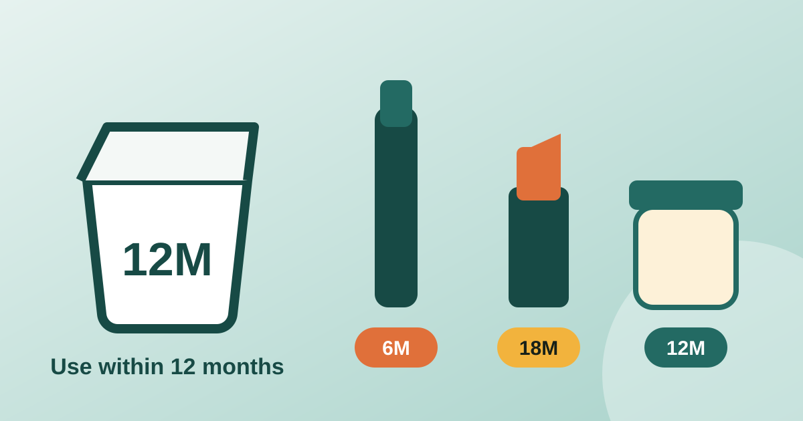

How to count the days between two dates (and when to add 1)
Most date mistakes are off by one. Here is when to add a day, how leap years and month lengths change the count, and the spreadsheet formulas that get it right.
Read article
12M on makeup means the product is good for 12 months after you first open it. The small open-jar icon is the period-after-opening (PAO) symbol, and the number with M is months: 6M, 12M, 24M. The clock starts on the day you open the product, not the day you buy it, so the useful date is one you have to remember yourself.
The PAO symbol is a drawing of an open jar with a number and the letter M inside or next to it. It tells you how long the product keeps its quality and stays safe to use once the seal is broken and air, fingers and brushes get in. After that time, preservatives may stop working well, textures separate and products can carry bacteria to the skin and eyes.
You will see one of two marks on cosmetics, and they answer different questions.
| Mark | What it means | When you see it (EU and UK rules) |
|---|---|---|
| Open jar with 6M, 12M… | Use within that many months after opening | Products that keep for more than 30 months unopened |
| Hourglass or "best used before the end of" + date | A fixed date, opened or not | Products that keep for 30 months or less |
In the US the FDA does not require expiration dates on cosmetics, so many products sold there show a PAO symbol, a batch code or nothing. Sunscreen is the exception: it is regulated as a drug and carries an expiration date. If a product has both a printed date and a PAO, use whichever comes first.
These are typical PAO numbers printed on common products. Your product's own symbol always wins over a general chart.
| Product | Typical time after opening |
|---|---|
| Mascara, liquid eyeliner | 3 to 6 months |
| Liquid foundation, concealer | 6 to 12 months |
| Face cream in a jar | 6 to 12 months |
| Sunscreen | About 12 months, and never past the printed date |
| Lipstick, lip balm | 12 to 24 months |
| Powder blush, eyeshadow, pressed powder | 12 to 24 months |
| Nail polish | 12 to 24 months |
| Perfume | Often 24 to 36 months |
Liquid and creamy products near the eyes go off fastest. Dry powders last longest because bacteria need water to grow.
Replace eye products after an eye infection, and do not share mascara or eyeliner.
It is the same habit as with food in the fridge: the label date is for a sealed pack, and opening it starts a new clock. Our chart of how long opened foods last and the guide to best before vs use by dates cover the kitchen side.
Days Until is an expiry tracker for anything with a date, cosmetics included. Add a product with its printed date or scan the label with your camera, then tap "Opened it" and the countdown switches to the time it keeps once opened. Reminders arrive 30 days, 1 week and 1 day before by default, with no item limit, no account and no ads. The same list can hold medicine, warranties and documents, such as the dates in our guide to passport, ID and licence expiry. For a quick count to any date, use the free days until calculator, and find more guides in home and expiry tracking.
It is the period after opening (PAO): use the product within 12 months of the day you first open it. 6M means 6 months, 24M means 24 months. The countdown starts when you open it, not when you buy it.
In the EU and UK, products that keep for 30 months or less must show a 'best used before the end of' date (often with an hourglass symbol); longer-lasting ones show the open-jar PAO symbol instead. In the US, the FDA does not require expiration dates on cosmetics, but sunscreens are regulated as drugs and carry one.
Usually 3 to 6 months, which is often the shortest PAO in a makeup bag. Every use moves bacteria from the lashes into the tube, so replace it sooner if it smells odd, goes clumpy or you have had an eye infection.
Write the month on the packaging with a marker, or log it in an expiry tracker. Days Until has an 'Opened it' button that switches the countdown to the time the product keeps once opened.
Most date mistakes are off by one. Here is when to add a day, how leap years and month lengths change the count, and the spreadsheet formulas that get it right.
Read articleThe date on the label is for an unopened pack. Once you open it the clock changes. Here is a chart of how long common foods keep in the fridge after opening.
Read articleAn expired passport is not found out at home, it is found out at the airport. Here is when to renew each document and how to get a reminder long before it matters.
Read articlePublished: . More in Home & expiry tracking or all articles.